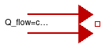
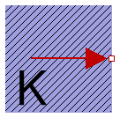
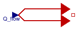
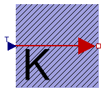

Thermal sources
alpha and T_ref have
been deleted in the models
Modelica.Thermal.HeatTransfer.Sources.FixedHeatFlow and
Modelica.Thermal.HeatTransfer.Sources.PrescribedHeatFlow
as these can cause division by zero in some fluid flow models.
Extends from Modelica.Icons.SourcesPackage (Icon for packages containing sources).
| Name | Description |
|---|---|
| FixedHeatFlow | Fixed heat flow boundary condition |
| FixedTemperature | Fixed temperature boundary condition in Kelvin |
| PrescribedHeatFlow | Prescribed heat flow boundary condition |
| PrescribedTemperature | Variable temperature boundary condition in Kelvin |
Fixed heat flow boundary condition

This model allows a specified amount of heat flow rate to be "injected" into a thermal system at a given port. The constant amount of heat flow rate Q_flow is given as a parameter. The heat flows into the component to which the component FixedHeatFlow is connected, if parameter Q_flow is positive.
This model is identical to
Modelica.Thermal.HeatTransfer.Sources.FixedHeatFlow, except that
the parameters alpha and T_ref have
been deleted as these can cause division by zero in some fluid flow models.
| Type | Name | Default | Description |
|---|---|---|---|
| HeatFlowRate | Q_flow | Fixed heat flow rate at port [W] |
| Type | Name | Description |
|---|---|---|
| HeatPort_b | port |
Fixed temperature boundary condition in Kelvin

This model defines a fixed temperature T at its port in Kelvin, i.e., it defines a fixed temperature as a boundary condition.
| Type | Name | Default | Description |
|---|---|---|---|
| Temperature | T | Fixed temperature at port [K] |
| Type | Name | Description |
|---|---|---|
| HeatPort_b | port |
Prescribed heat flow boundary condition

This model allows a specified amount of heat flow rate to be "injected" into a thermal system at a given port. The amount of heat is given by the input signal Q_flow into the model. The heat flows into the component to which the component PrescribedHeatFlow is connected, if the input signal is positive.
This model is identical to
Modelica.Thermal.HeatTransfer.Sources.PrescribedHeatFlow, except that
the parameters alpha and T_ref have
been deleted as these can cause division by zero in some fluid flow models.
| Type | Name | Description |
|---|---|---|
| input RealInput | Q_flow | |
| HeatPort_b | port |
Variable temperature boundary condition in Kelvin

This model represents a variable temperature boundary condition. The temperature in [K] is given as input signal T to the model. The effect is that an instance of this model acts as an infinite reservoir able to absorb or generate as much energy as required to keep the temperature at the specified value.
| Type | Name | Description |
|---|---|---|
| HeatPort_b | port | |
| input RealInput | T |